-- m

SELECCIONAR MAPA
OpenStreetMap
IGN Raster
OpenTopoMap
Esri Satélite
Centro de Control

Ajustes Visuales y Estilo
▼
Estilo por defecto del mapa:
OpenStreetMap
IGN Raster
OpenTopoMap
Esri Satélite
Mostrar Cursor Central (X):
Tamaño del Cursor:
75
px
Inclinación Máxima / Pitch:
0
°
Guardar Ajustes
Puntos de Interés
Gestor busqueda PDI
Ajustar zona de búsqueda

Senderismo

Ciclismo y MTB
Categorías
Expandir
Gestor de PDI
0


Ajustar zona de búsqueda
Radio:
5
km
Superficie: 78.5 km²
Aceptar y Guardar
Categoría
Nombre del PDI
Distancia y coordenadas
Listado